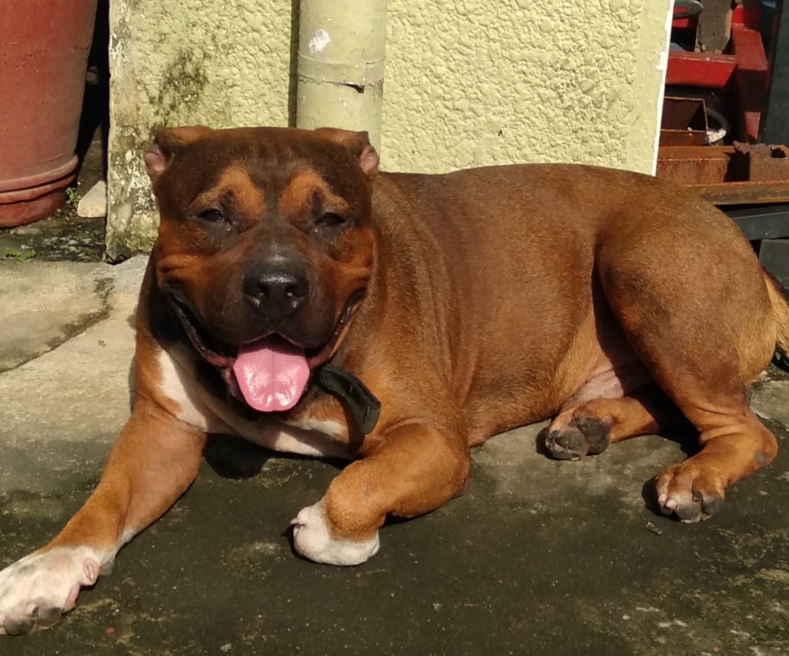

My favorite breeds
|  |
Bruno is my American Bully dog. The American Bully is a contemporary dog breed that was created as a companion animal and was first standardized and acknowledged as a breed in 2004 by the American Bully Kennel Club. |
 |
Shih Tzus are famous for their short snouts and enormous wide eyes, as well as their ever growing coat, floppy ears, and short and stout posture. Despite being small, they are recognized for their calm disposition, sense of humor, and friendliness. |

| The breed has a compact, square body with robust, well-developed muscles all over the body and a fine, glossy coat that occurs in a range of hues, most frequently light brown (fawn) or black. |